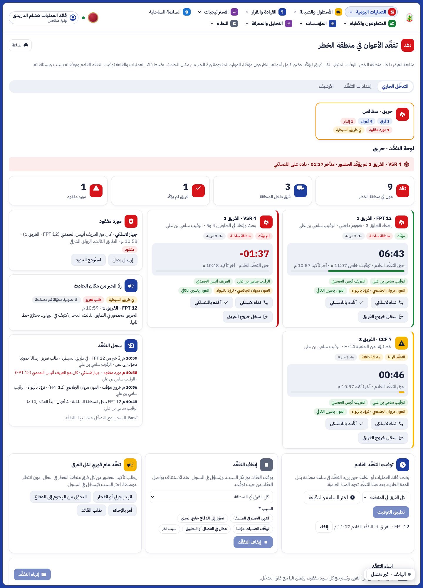
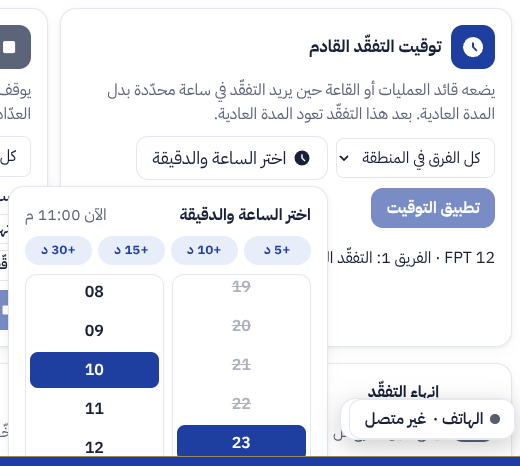
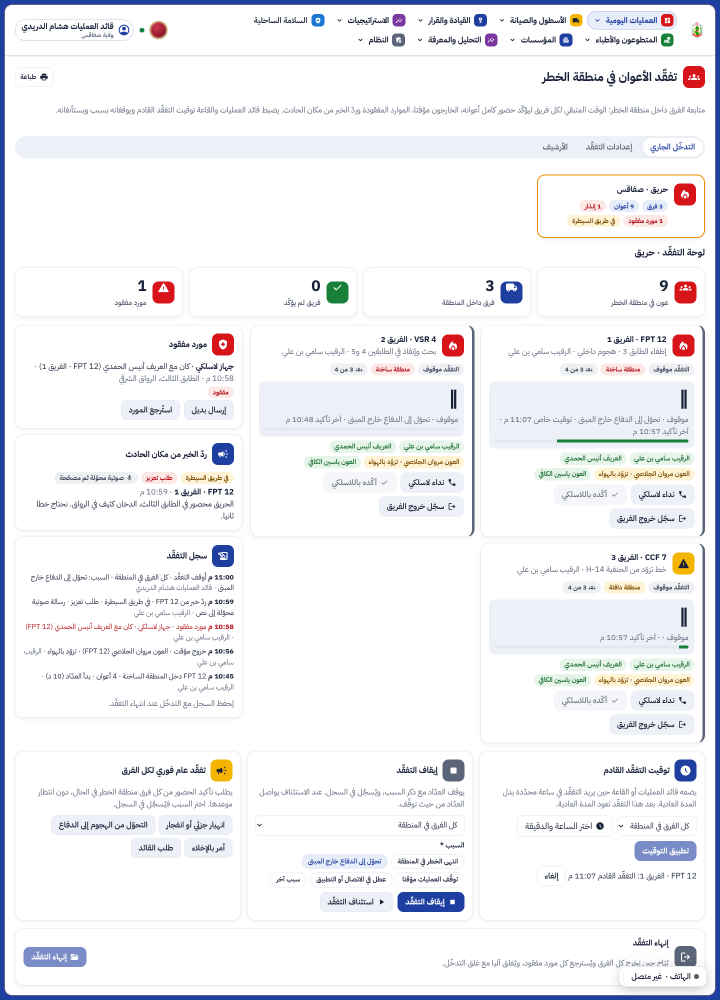
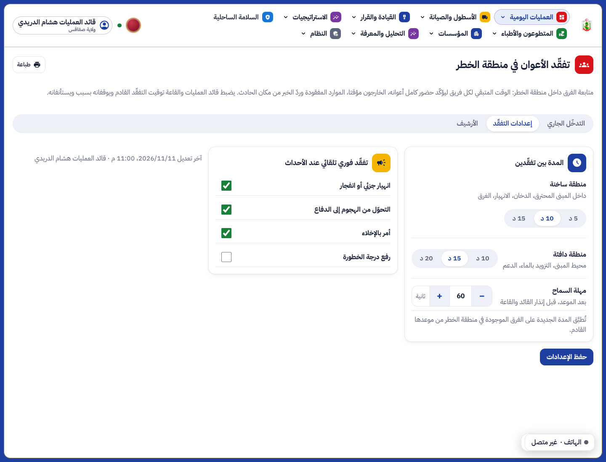

تقرير المرحلة OS7: تفقّد الأعوان في منطقة الخطر (PAR)
0107_par من السلسلة الرئيسية، وصفحتها في القائمة «العمليات اليومية» › «تفقّد الأعوان»، وبطاقتها في شاشة المهمة لرئيس الفريق.



شاشات الهاتف كما وافقت عليها في النموذج المعزول (additions/17-par-module/ في ملفات المشروع).
| العمل | من | الزر |
|---|---|---|
| قراءة لوحة التفقّد والأرشيف والإعدادات | أدوار القراءة في العمليات | par |
| مدد التفقّد | عون القاعة، رئيس العمليات، قائد العمليات، في ولايتهم | par.settings |
| توقيت التفقّد القادم، الإيقاف والاستئناف، التفقّد العام | نفسهم | par.timing |
| نداء فريق وتأكيده وخروجه باللاسلكي، البديل والاسترجاع | نفسهم | par.teams |
| إنهاء التفقّد | نفسهم | par.close |
| الدخول والتأكيد والخروج المؤقت والخروج، المورد المفقود وردّ الخبر | رئيس الفريق على المركبة التي يتسلّمها | field_par.check، field_par.report |
tests/test_par.py تغطي الحالتين: غير مفعّلة (لا مسار ولا صفحة) ومفعّلة (المسار كاملا من الدخول إلى الأرشيف، والإعدادات والولاية، والغلق الآلي). ruff وmypy نظيفان.shellcheck scripts/par.sh.e2e/phase-os7.spec.ts (5 اختبارات في المتصفح، منها هذه اللقطات).flutter analyze نظيف.